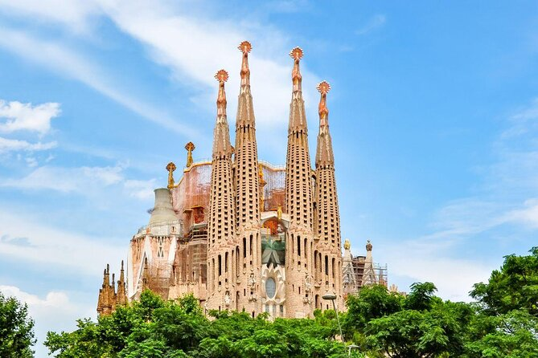
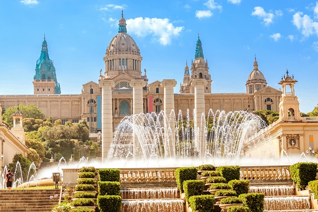
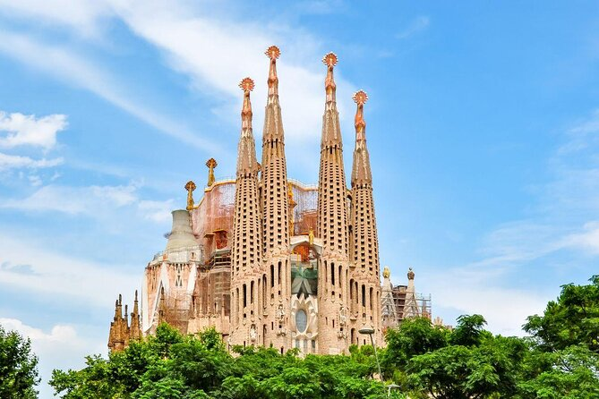
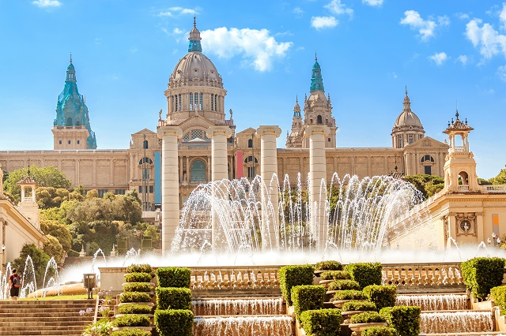

Spain
Madrid
**Discover the Vibrant Heart of Spain: Madrid**
Madrid, the bustling capital of Spain, invites travelers with its perfect blend of rich history, modern flair, and vibrant culture. Stroll through the grand avenues and charming neighborhoods, where architectural marvels like the Royal Palace and the majestic Plaza Mayor showcase the city's regal past. Art enthusiasts will find paradise in the Golden Triangle of Art, home to the renowned Prado, Reina Sofía, and Thyssen-Bornemisza museums. For a taste of local life, explore the colorful Mercado de San Miguel or unwind at the expansive Retiro Park, a green oasis in the city's heart. As the sun sets, Madrid truly comes alive. Experience the city's famed nightlife, indulge in delicious tapas, and immerse yourself in the passionate rhythms of flamenco. Whether you're seeking world-class art, culinary delights, or simply the warmth of Spanish hospitality, Madrid promises an unforgettable journey filled with excitement and charm.

Barcelona
**Experience the Magic of Barcelona**
Barcelona, the dazzling capital of Catalonia, captivates visitors with its unique fusion of history, art, and coastal charm. Wander through the enchanting streets of the Gothic Quarter, where medieval architecture meets vibrant local life. Marvel at the surreal creations of Antoni Gaudí, from the iconic Sagrada Família to the whimsical Park Güell, where colors and forms dance in harmony with nature. Sunseekers will delight in Barcelona’s golden beaches, perfect for relaxing or enjoying a seaside meal along the bustling Barceloneta promenade. For a taste of local culture, visit La Boqueria Market, brimming with fresh flavors and Catalan specialties. Art lovers shouldn’t miss the Picasso Museum or the contemporary exhibits at MACBA. As night falls, the city pulses with energy, offering everything from lively tapas bars to world-class restaurants and dynamic nightlife. Whether you're exploring its architectural wonders, savoring Mediterranean cuisine, or soaking in the coastal ambiance, Barcelona promises a vibrant and unforgettable escape.
 



Malaga
**Discover the Charm of Málaga**
Málaga, the jewel of Spain’s Costa del Sol, offers a captivating blend of sun-soaked beaches, rich history, and vibrant culture. Stroll through the charming old town, where narrow cobbled streets lead to the impressive Málaga Cathedral and the bustling Atarazanas Market, a haven for local flavors and fresh produce. Art lovers will find inspiration at the Picasso Museum, celebrating the city’s most famous son, or at the Centre Pompidou Málaga, showcasing contemporary masterpieces. For breathtaking views, explore the ancient Alcazaba fortress and the Gibralfaro Castle overlooking the shimmering Mediterranean Sea. Málaga’s palm-lined promenades invite leisurely walks, while its pristine beaches offer the perfect spot to relax under the Andalusian sun. As evening falls, indulge in delicious seafood at beachfront chiringuitos or savor traditional tapas in lively local bars. Whether you seek cultural treasures, culinary delights, or seaside serenity, Málaga delivers a warm and unforgettable Spanish experience.